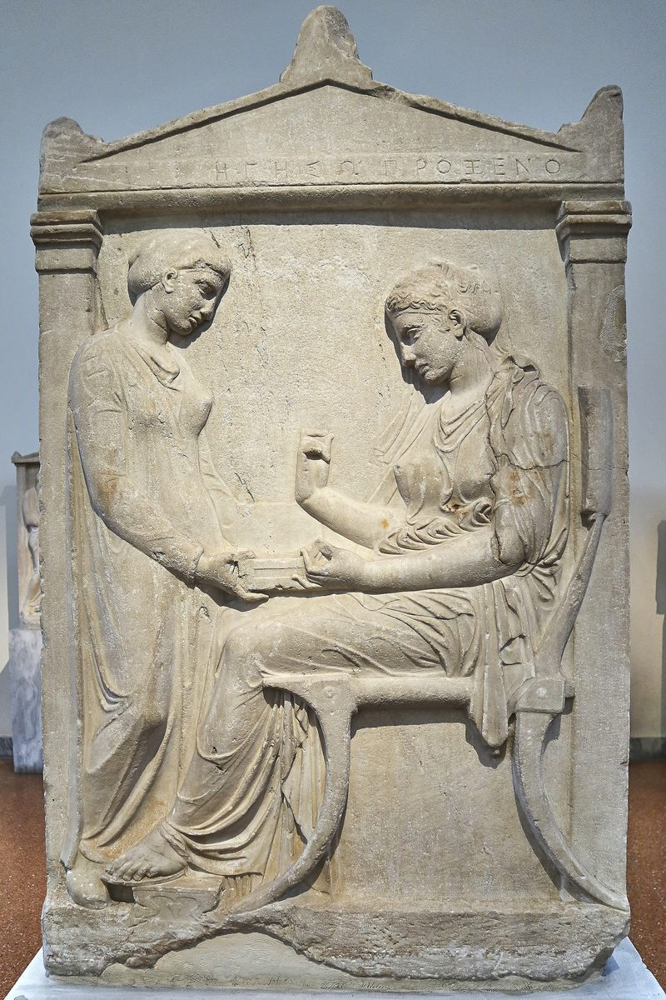

1 Tesalonicenses 4 — La Traducción Mister

⚠ El monumento de una familia ateniense a Hegeso, hija de Próxeno, mostrada en un momento tranquilo de la casa. «Pero no queremos, hermanos, que ignoren lo que se refiere a los que duermen, para que no se entristezcan como los demás, que no tienen esperanza» (versículo 13).
_at_the_National_Archaeological_Museum_on_3_April_2018.jpg){kind=link}
Notas del traductor
«Cómo deben andar y agradar a Dios —como de hecho andan—, abunden aún más». «Por lo demás» lleva la carta del recuerdo a la instrucción, aunque quedan dos capítulos. «Andar» y «agradar a Dios» retoman 2:12, «que anden de manera digna de Dios», y 2:4, «no como quienes agradan a los hombres, sino a Dios»; «abundar» es el verbo de la oración de 3:12. El texto bizantino no tiene «como de hecho andan», y tampoco la RV60: «os rogamos y exhortamos en el Señor Jesús, que de la manera que aprendisteis de nosotros cómo os conviene conduciros y agradar a Dios, así abundéis más y más»; la TNM 1987 dice «tal como de hecho están andando»; la NVI dice «Por lo demás, hermanos, les pedimos encarecidamente».
«Esta es la voluntad de Dios, su santificación: que se aparten de la inmoralidad sexual». Hagiasmos, «santificación», el hacerse santo, está tres veces en los vv. 3–7, como en 1 Corintios 1:30 y Romanos 6:19 (diccionario); la oración de 3:13 pedía corazones «irreprochables en santidad». Porneia es la «inmoralidad sexual» de Colosenses 3:5 (diccionario). La RV60 dice «pues la voluntad de Dios es vuestra santificación; que os apartéis de fornicación»; la NVI dice «que se aparten de la inmoralidad sexual».
⚠ «Que cada uno de ustedes sepa adquirir su propio vaso en santificación y honra». Ktasthai es el infinitivo de Hechos 8:20, «adquirir el don de Dios» (diccionario); skeuos es un vaso, una vasija, cualquier objeto (diccionario). Las dos lecturas principales son antiguas. Unos toman el vaso como el propio cuerpo, que hay que dominar, como Pablo habla de «vasijas de barro» en 2 Corintios 4:7. Otros lo toman como una esposa, que se toma en matrimonio, comparando 1 Pedro 3:7, «un vaso más débil», y el sentido de «adquirir»; en contra, algunos objetan que así se hablaría de una esposa como de un objeto. Esta página expone ambas y no elige, y conserva «vaso» para que ninguna quede decidida por el lector. La RV60 dice «que cada uno de vosotros sepa tener su propia esposa en santidad y honor»; la TNM 1987 dice «que cada uno de ustedes sepa tomar posesión de su propio vaso»; la NVI dice «que cada uno aprenda a controlar su propio cuerpo».
«No en pasión de deseo, como las naciones que no conocen a Dios». Pathos es la «pasión» de Colosenses 3:5. «Las naciones que no conocen a Dios» es lo que los propios tesalonicenses fueron: Gálatas 4:8, «cuando no conocían a Dios». La RV60 dice «no en pasión de concupiscencia»; la TNM 1987 dice «no en codicioso apetito sexual»; la NVI dice «sin dejarse llevar por los malos deseos».
«… traspase los límites ni se aproveche de su hermano en el asunto, porque el Señor es vengador». Hyperbainō, «traspasar», está en un solo versículo del Nuevo Testamento (diccionario); pleonekteō es «aprovecharse», como en 2 Corintios 7:2. «El asunto» se lee como el asunto que se está tratando, de modo que el adulterio es un agravio contra un hermano, o como los negocios, con el negotium de la Vulgata. «Vengador» es el ekdikos de Romanos 13:4. Los lectores toman «el Señor» como el Señor Jesús de los vv. 1–2 o como Dios; esta traducción conserva «Señor». La RV60 dice «que ninguno agravie ni engañe en nada a su hermano»; la TNM 1987 dice «porque Jehová es uno que exige castigo por todas estas cosas»; la NVI dice «El Señor castiga todo esto».
«El que deja esto a un lado no deja a un lado a un hombre, sino a Dios, que también les da su Espíritu Santo». «Esto» se suple; el griego dice solo «el que deja a un lado». Atheteō es «dejar a un lado», como en Marcos 7:9, y «desechar» en Gálatas 2:21, «No desecho la gracia de Dios». «Da» está en presente; el texto bizantino dice «dio», y así la RV60: «que también nos dio su Espíritu Santo»; la TNM 1987 dice «que pone su espíritu santo en ustedes»; la NVI dice «quien da a ustedes su Espíritu Santo».
«En cuanto al amor fraternal … ustedes mismos son enseñados por Dios a amarse unos a otros». Philadelphia, «amor fraternal», es la palabra de Romanos 12:10 (diccionario). Theodidaktoi, «enseñados por Dios», está en un solo versículo del Nuevo Testamento (diccionario); el griego de Isaías 54:13 dice que todos los hijos de Sion serán «enseñados de Dios». Lo muestran «en toda Macedonia» (enciclopedia). La RV60 dice «porque vosotros mismos habéis aprendido de Dios que os améis unos a otros»; la TNM 1987 dice «ustedes mismos son enseñados por Dios a amarse unos a otros».
«Que procuren con empeño vivir tranquilos, y ocuparse de sus propios asuntos, y trabajar con sus manos». Philotimeomai, «procurar con empeño», el amor a la honra vuelto ambición, está en tres versículos: Romanos 15:20, 2 Corintios 5:9 y este (diccionario); aquí la ambición es estar tranquilos. Hēsychazō, «vivir tranquilos», es el verbo de Hechos 11:18, «se calmaron» (diccionario). Trabajar con las manos es lo que hicieron los misioneros, «noche y día» (2:9). Los lectores preguntan por qué hacía falta la instrucción: unos la relacionan con la ociosidad a la espera del fin, de la que trata 2 Tesalonicenses 3:6–12; otros con la vida corriente en una sociedad de patronos y dependientes. Nestle–Aland y el texto bizantino dicen «sus propias manos», y así la NVI: «a trabajar con sus propias manos»; la RV60 dice «y que procuréis tener tranquilidad, y ocuparos en vuestros negocios, y trabajar con vuestras manos».
«Para que anden honestamente ante los de afuera». Euschēmonōs, «honestamente», como en Romanos 13:13, «Andemos honestamente, como de día»; «los de afuera» como en Colosenses 4:5. La RV60 dice «a fin de que os conduzcáis honradamente para con los de afuera»; la TNM 1987 dice «para que anden decentemente en lo que tiene que ver con los de afuera».
«Lo que se refiere a los que duermen, para que no se entristezcan como los demás, que no tienen esperanza». Koimaomai, «dormirse», es la palabra para los muertos en 1 Corintios 15:6 y 1 Corintios 15:20, «primicias de los que durmieron». Pablo no prohíbe el dolor, solo un dolor de esa clase. «Sin esperanza» se dice del pasado de los lectores en Efesios 2:12; el poeta griego Teócrito, en el siglo III a. C., hace decir a un pastor: «las esperanzas están entre los vivos; los muertos no tienen esperanza» (Idilio 4.42). El texto bizantino dice el perfecto, «los que se han dormido», y así la RV60: «acerca de los que duermen, para que no os entristezcáis como los otros que no tienen esperanza»; la TNM 1987 dice «los que están durmiendo [en la muerte]», y la NVI dice «lo que va a pasar con los que ya han muerto», añadiendo cada una la explicación.
«Dios traerá con él a los que durmieron por medio de Jesús». «Por medio de Jesús» puede ir con «durmieron», los que murieron como suyos, como en 1 Corintios 15:18, «los que durmieron en Cristo»; o con «traerá», Dios que los trae por medio de Jesús. Esta traducción conserva el orden griego. La RV60 dice «así también traerá Dios con Jesús a los que durmieron en él»; la TNM 1987 dice «a los que se han dormido [en la muerte] mediante Jesús, Dios los traerá con él»; la NVI dice «Así también Dios resucitará con Jesús a los que han muerto en unión con él».
«Por palabra del Señor: que nosotros los que vivimos, los que quedemos hasta la presencia del Señor». Los lectores toman «palabra del Señor» como un dicho de Jesús que los Evangelios no recogen, como una enseñanza de Jesús del tipo de Mateo 24:31 en palabras de Pablo, o como una palabra dada por el Señor resucitado por medio de un profeta. La TNM 1987 dice «por palabra de Jehová»; esta traducción conserva «Señor», pues el Señor de estos versículos es el Señor Jesús que desciende en el v. 16. «Nosotros los que vivimos» cuenta a los que escriben entre los vivos: los lectores entienden que Pablo esperaba estar vivo, o que habla por quienes estén vivos entonces, como en 1 Corintios 15:51, «no todos dormiremos», junto a 2 Corintios 4:14, «también nos resucitará». «Adelantarse» es phthanō (diccionario). La RV60 dice «no precederemos a los que durmieron»; la RV 1909 dice «no seremos delanteros á los que durmieron».
«Con voz de mando, con voz de arcángel y con trompeta de Dios». Keleusma, una voz de mando, la palabra para una orden gritada a las tropas o a los remeros, está en un solo versículo del Nuevo Testamento (diccionario). Archangelos está en dos versículos: este y Judas 1:9, «Miguel el arcángel» (diccionario). En el Sinaí sonó el cuerno (Éxodo 19:16), y la trompeta suena en 1 Corintios 15:52, «la última trompeta», y en Mateo 24:31. «Los muertos en Cristo resucitarán primero»: los vivos no tienen ventaja. La RV60 dice «con voz de mando, con voz de arcángel, y con trompeta de Dios»; la TNM 1987 dice «con una llamada imperativa»; la RV 1909 dice «con aclamación».
⚠ «Nosotros … seremos arrebatados juntamente con ellos en nubes al encuentro del Señor en el aire». Harpazō es «arrebatar», como en 2 Corintios 12:2, donde Pablo «fue arrebatado hasta el tercer cielo» (diccionario). La Vulgata latina lo traduce rapiemur, «seremos arrebatados», y de esa raíz latina viene el inglés rapture, en español «rapto», el nombre que se da a esta enseñanza. La enseñanza de que los creyentes serán arrebatados antes de un tiempo de tribulación, y de que la venida visible del Señor seguirá después, se difundió en la década de 1830 sobre todo por John Nelson Darby y los Hermanos de Plymouth, y luego ampliamente por la Biblia de referencia Scofield de 1909; quienes la sostienen la encuentran aquí. Otros leen una sola venida pública, y señalan apantēsis, «al encuentro», la palabra para la gente que sale de una ciudad a recibir a un huésped que llega y acompañarlo hasta dentro, como las vírgenes salen al novio en Mateo 25:6 y los hermanos salen de Roma al encuentro de Pablo en Hechos 28:15 (diccionario). Esta página expone ambas y no elige. Las nubes van con él en Hechos 1:9, «una nube lo recibió», y en Marcos 13:26. La RV60 dice «seremos arrebatados juntamente con ellos en las nubes para recibir al Señor en el aire»; la TNM 1987 dice «seremos arrebatados, juntamente con ellos, en nubes al encuentro del Señor en el aire»; la NVI dice «para encontrarnos con el Señor en el aire».
«Y así estaremos siempre con el Señor. Así que consuélense unos a otros con estas palabras». El final del pasaje no es un calendario sino una compañía: estar «con el Señor», como Pablo desea «estar con Cristo» en Filipenses 1:23. «Consolar» es parakaleō (diccionario), y el pasaje se escribió para leerse a los que estaban de luto. La RV60 dice «Por tanto, alentaos los unos a los otros con estas palabras»; la TNM 1987 dice «sigan consolándose unos a otros con estas palabras»; la NVI dice «anímense unos a otros con estas palabras».
Patrones que vale la pena recordar
Donde esta traducción conserva las palabras exactas: «andar» y «agradar a Dios», como en 2:12 y 2:4; «abundar», como en 3:12; «santificación», como en 1 Corintios 1:30; «inmoralidad sexual» y «pasión», como en Colosenses 3:5; «vaso», sin decidir, como en Romanos 9:21; «adquirir», como en Hechos 8:20; «vengador», como en Romanos 13:4; «dejar a un lado», como en Marcos 7:9; «amor fraternal», como en Romanos 12:10; «honestamente», como en Romanos 13:13; «dormir», como en 1 Corintios 15:20; «presencia», como en 2:19; «arrebatar», como en 2 Corintios 12:2; «encuentro», como en Hechos 28:15; y «consolar» para parakaleō.
Ecos pagados. La santidad de 1 Tesalonicenses 3:13, ahora explicada; el amor unos por otros de 1 Tesalonicenses 3:12; el trabajo noche y día de 1 Tesalonicenses 2:9; los santos que vienen con el Señor en 1 Tesalonicenses 3:13, y los muertos que Dios trae con él; la presencia de 1 Tesalonicenses 2:19; la espera de su Hijo «desde los cielos» en 1 Tesalonicenses 1:10, y el latín rapiemur prometido allí.
Ecos sembrados. «Acerca de los tiempos y las ocasiones» en 5:1, otra vez con «no tienen necesidad de que se les escriba»; el día del Señor «como ladrón en la noche» en 5:2; y «consuélense unos a otros» otra vez en 5:11.
A continuación en este libro: 1 Tesalonicenses 5, ya en estas páginas. El día del Señor como un ladrón, hijos de la luz y las últimas instrucciones.